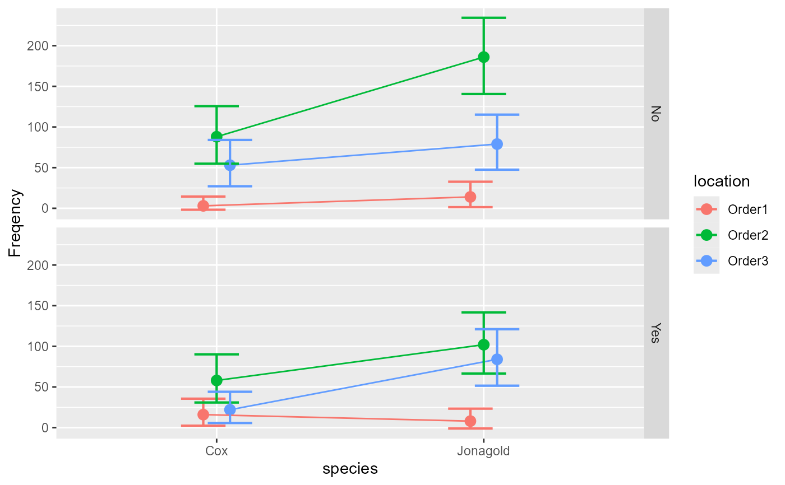

The data, taken from M. (1993)
, is a dataset examining
the distribution of apple tree to produce new branches from grafts. The study has
a sample of 713 trees subdivided into three factors:
species (2 levels: Jonagold or Cox);
location (3 levels: Order1, Order2, Order3);
is where the graft has been implanted (order 1 is right on the trunk);
and florished (2 levels: yes or no) indicates if the branch bear
flowers. It is therefore a 2 × 3 × 2 design with 12 cells.
Gillet1993An object of class list.
M. G (1993). Contribution à la modélisation de la croissance et du développement du pommier. Faculté des Sciences agronomiques, Gembloux.
# The Gillet1993 presents data from appletrees having grafts.
Gillet1993
#> species location florished Freq
#> 1 Jonagold Order1 Yes 8
#> 2 Jonagold Order1 No 14
#> 3 Jonagold Order2 Yes 102
#> 4 Jonagold Order2 No 186
#> 5 Jonagold Order3 Yes 84
#> 6 Jonagold Order3 No 79
#> 7 Cox Order1 Yes 16
#> 8 Cox Order1 No 3
#> 9 Cox Order2 Yes 58
#> 10 Cox Order2 No 88
#> 11 Cox Order3 Yes 22
#> 12 Cox Order3 No 53
# run the base analysis
w <- anofa( Freq ~ species * location * florished, Gillet1993)
# display a plot of the results
anofaPlot(w)

# show the anofa table where we see the 3-way interaction
summary(w)
#> G df Gcorrected pvalue etasq
#> Total 515.97724 11 NA NA NA
#> species 77.55830 1 77.50394 0.000000 0.09811
#> location 379.25702 2 378.90274 0.000000 0.34722
#> florished 24.95517 1 24.93768 0.000001 0.03382
#> species:location 3.31188 2 3.29839 0.192205 0.39222
#> species:florished 0.06801 1 0.06777 0.794610 0.12578
#> location:florished 9.39076 2 9.35250 0.009314 0.36712
#> species:location:florished 21.43610 2 21.08372 0.000026 0.41984
# This returns the expected marginal frequencies analysis
e <- emFrequencies(w, Freq ~ species * location | florished )
summary(e)
#> G df Gcorrected pvalue etasq
#> species:location | No 4.869 2 4.849 0.08850 0.43332
#> species | No 43.848 1 43.817 0.00000 0.09392
#> location | No 274.732 2 274.476 0.00000 0.39375
#> species:location | Yes 19.879 2 19.798 0.00005 0.36622
#> species | Yes 33.778 1 33.755 0.00000 0.10433
#> location | Yes 113.915 2 113.809 0.00000 0.28203
# as seen, all the two-way interactions are significant. Decompose one more degree:
f <- emFrequencies(w, Freq ~ species | florished * location )
summary(f)
#> G df Gcorrected pvalue etasq
#> species | :No:Order1 7.723 1 7.718 0.172500 0.31238
#> species | :Yes:Order1 2.718 1 2.716 0.743597 0.10174
#> species | :No:Order2 35.839 1 35.814 0.000001 0.11567
#> species | :Yes:Order2 12.257 1 12.249 0.031534 0.07116
#> species | :No:Order3 5.155 1 5.151 0.397703 0.03758
#> species | :Yes:Order3 38.681 1 38.654 0.000000 0.26736